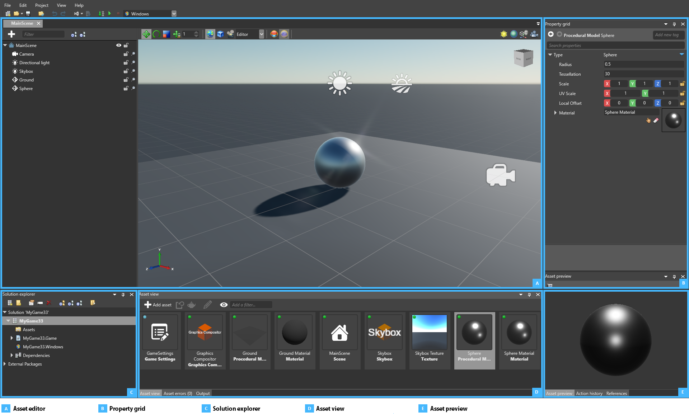

Game Studio
初級
Game Studio は、Stride でゲームとアプリケーションを開発するときの中心的なツールです。Game Studio では、次のことができます。
- シーンを作成して調整します
- アセットをインポートし、そのパラメーターを変更して、プレビュー ウィンドウで変更をリアルタイムに確認します
- アセットをフォルダーで整理し、タグをアタッチし、ディスクで変更されたアセットから通知を受け取ります
- ゲームの実行可能ファイルをビルドして、直接実行します
また、Game Studio は Visual Studio のプロジェクトと統合されるので、シームレスに同期し、両者を切り替えて使用することができます。
インターフェイス

［Asset editor］(A) は、アセットとシーンの編集に使用します。シーンなどの一部のアセットの種類には専用のエディターがあり、アセットに対する複雑な変更を行うことができます。専用エディターを開くには (使用できる場合)、アセットをダブルクリックするか、アセットを右クリックして［Edit asset］を選択します。
［Property grid］(B) には、選択されているアセットまたはエンティティのプロパティが表示されます。ここでプロパティを編集できます。
［Solution explorer］(C) には、プロジェクトの要素 (アセット、コード ファイル、パッケージ、依存関係など) の階層が表示されます。フォルダーとオブジェクトを作成し、それらの名前を変更したり移動したりできます。
［Asset view］(D) には、プロジェクトのアセットが表示されます。［New Asset］ボタンを使用して、またはリソース ファイルを［Asset view］にドラッグ アンド ドロップすることで、新しいアセットを作成できます。また、［Asset view］からさまざまなエディターまたは［Property grid］にアセットをドラッグ アンド ドロップして、アセットのインスタンスを作成したり、アセットへの参照を追加したりすることもできます。既定では、［Asset view］は下部の中央に表示されます。
［Asset preview］タブ (E) には、選択されているアセットのプレビューが表示されます。プレビューは、選択したアセットの種類に応じて変わります。たとえば、アニメーションやサウンドを再生できます。これを使用して、［Property grid］で編集しているアセットに対する変更を簡単に確認できます。既定では、［Asset preview］は右下に表示されます。
Game Studio のさまざまな部分は、［View］メニューで表示/非表示を切り替えることができます。また、UI の各部分は、サイズを変更したり移動したりできます。